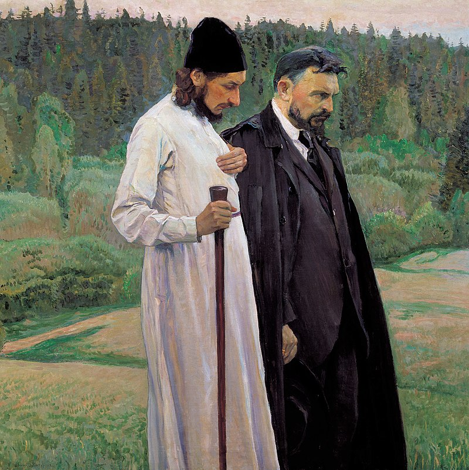

Что есть Русская Религиозная философия? Русская Религиозная философия есть, в первую очередь, мысль православная, которая ставит свою цель объединения людей, одна из важнейших и фундуметальных идей наше философии-идея соборности.
Русская философия формировалась под влиянием нескольких факторов: Социально – культурное развитие России, её история, которые давали пищу для философских размышлений и идей Достижения мировой философии, которая творчески перерабатывалась на национальной почве В ней воплотились творческие поиски русского народа, проявились своеобразные черты национального характера и мышления.
Крупнейшими представителями русской религиозной философии были: В.Соловьёв, А.Лосев, С.Булгаков, Н.Бердяев, П.Флоренский. Их взгляды можно назвать философией всеединства, т.к. в их основе лежала идея соборности. Соборность – это объединение (собирание) людей, их единство на основе любви к Богу и предпочтения нравственных ценностей над всеми другими- материальными, идеологическими, социальными и т.п. Идеалом для них было Богочеловечество, живущее по трём главным принципам: Благо, Истина и Красота, которые образуют единство, смысл которого – Любовь. Русские философы сделали вывод: человечество может спасти только Любовь и Нравственность.
